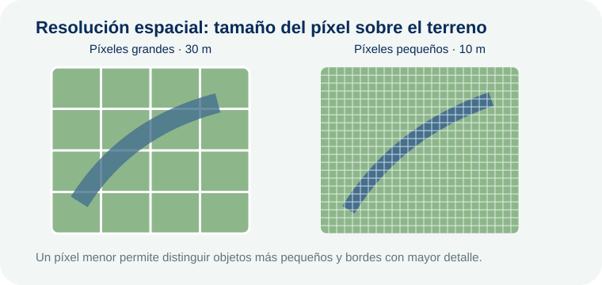
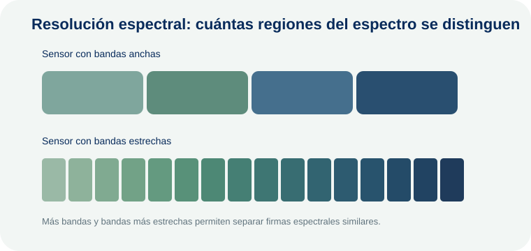
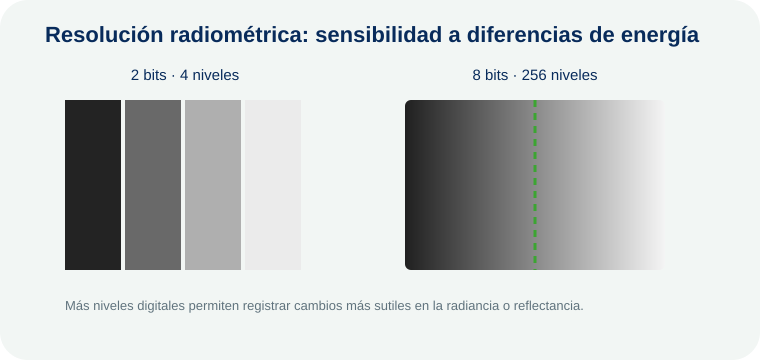
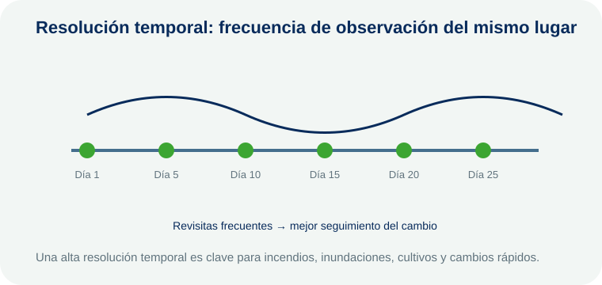

00Fundamentos de teledetección
Las resoluciones describen qué nivel de detalle puede registrar un sensor. No existe una única “mejor” resolución: la elección depende del fenómeno que se desea estudiar.
Resolución espacial
¿Qué tamaño de objeto puedo distinguir?
La resolución espacial corresponde al tamaño del área del terreno representada por un píxel. Si una imagen tiene 10 m de resolución espacial, cada píxel representa aproximadamente una superficie de 10 × 10 m.
Ejemplo: una imagen de 10 m puede representar con mayor detalle caminos, pequeños parches de vegetación o bordes urbanos que una imagen de 30 m. Sin embargo, un píxel pequeño no garantiza por sí solo una mejor investigación: para analizar grandes patrones climáticos puede ser suficiente una resolución más gruesa.
Idea claveMenor tamaño de píxel = mayor detalle espacial.
Resolución espectral
¿Qué partes del espectro electromagnético puede separar el sensor?
La resolución espectral se refiere a la capacidad del sensor para registrar la energía en diferentes intervalos de longitud de onda. Un sensor con varias bandas estrechas puede distinguir respuestas espectrales que un sensor con pocas bandas anchas podría mezclar.
Ejemplo: las bandas roja e infrarroja cercana permiten calcular NDVI. Si el sensor no registra el NIR, ese indicador no puede obtenerse directamente. Los sensores hiperespectrales registran numerosas bandas estrechas y pueden separar materiales o tipos de vegetación con firmas muy similares.
Idea claveMás detalle espectral permite reconocer diferencias en la forma en que los objetos reflejan o emiten energía.
Resolución radiométrica
¿Qué tan pequeñas pueden ser las diferencias de energía detectadas?
La resolución radiométrica representa la sensibilidad del sensor para diferenciar niveles de energía. Se relaciona habitualmente con la cantidad de bits utilizados para almacenar los valores digitales.
Ejemplo: un sensor de 8 bits puede representar 28 = 256 niveles digitales, mientras uno de 12 bits puede representar 212 = 4.096 niveles. El segundo puede registrar diferencias más sutiles entre superficies con respuestas energéticas cercanas.
Idea claveMayor profundidad radiométrica = mayor capacidad para distinguir variaciones sutiles de energía.
Resolución temporal
¿Cada cuánto tiempo se observa nuevamente un lugar?
La resolución temporal indica la frecuencia con que un sensor o una constelación puede volver a observar una misma zona. También se conoce como tiempo o período de revisita.
Ejemplo: para seguir una inundación, un incendio activo o el desarrollo de un cultivo, disponer de observaciones frecuentes puede ser más importante que tener píxeles extremadamente pequeños. Una revisita de pocos días permite construir series temporales y detectar cambios rápidos.
Idea claveMenor tiempo entre observaciones = mayor resolución temporal.
Las resoluciones trabajan en conjunto
Una imagen satelital debe entenderse como un compromiso entre detalle espacial, información espectral, sensibilidad radiométrica y frecuencia temporal. Por ejemplo, el sensor adecuado para cartografiar pequeños objetos urbanos no necesariamente será el mejor para estudiar cambios diarios de vegetación a escala continental.
01Indicadores espectrales
Fórmulas, bandas espectrales, interpretación y rangos de referencia.
NDVI
Índice de Vegetación de Diferencia Normalizada\[ NDVI = \frac{NIR - Red}{NIR + Red} \]
NIR · 700–1.300 nmRojo · 620–700 nm
Evalúa el vigor y la actividad fotosintética de la vegetación mediante el contraste entre el infrarrojo cercano y la absorción de la radiación roja por la clorofila.
−1 a 0Agua o superficies no vegetadas
0 a 0,2Suelo desnudo o vegetación muy escasa
0,2 a 0,5Vegetación dispersa a moderada
0,5 a 1Vegetación densa y vigorosa
NDWI
McFeeters\[ NDWI = \frac{Green - NIR}{Green + NIR} \]
Verde · 500–600 nmNIR · 700–1.300 nm
Realza cuerpos de agua superficial y reduce la respuesta de la vegetación y otras superficies terrestres.
> 0Usualmente asociado a agua superficial
≈ 0Transición o mezcla espectral
< 0Vegetación, suelo y otras superficies
NBR y dNBR
Área quemada y severidad\[ NBR = \frac{NIR - SWIR_{2}}{NIR + SWIR_{2}} \]
NIR · 700–1.300 nmSWIR2 · 2.000–2.500 nm
Identifica cambios asociados al fuego mediante la respuesta contrastante del NIR y el SWIR2.
\[ dNBR = NBR_{pre} - NBR_{post} \]
La diferencia pre y post incendio permite estimar la severidad del cambio.
dNBRClase
< −0,25Alta regeneración postincendio
−0,25 a −0,10Baja regeneración postincendio
−0,10 a 0,10No quemado
0,10 a 0,27Baja severidad
0,27 a 0,44Severidad moderada-baja
0,44 a 0,66Severidad moderada-alta
> 0,66Alta severidad
EVI
Índice de Vegetación Mejorado\[ EVI = G \\times \frac{NIR - Red}{NIR + C_{1}Red - C_{2}Blue + L} \]
G = 2,5C₁ = 6C₂ = 7,5L = 1
NIR · 700–1.300 nmRojo · 620–700 nmAzul · 450–500 nm
Mejora la respuesta en áreas de biomasa alta y reduce parcialmente la influencia del suelo y de efectos atmosféricos. Es útil cuando el NDVI tiende a saturarse.
Valores bajosEscasa vegetación
0,2 a 0,5Vegetación moderada
> 0,5Vegetación densa o vigorosa
SAVI
Índice de Vegetación Ajustado al Suelo\[ SAVI = \left(\frac{NIR - Red}{NIR + Red + L}\right)(1 + L) \]
L = 0,5 · valor usual
NIR · 700–1.300 nmRojo · 620–700 nm
Reduce la influencia del brillo del suelo y resulta útil en áreas áridas, semiáridas o con vegetación escasa.
Cercanos a 0Suelo desnudo o vegetación escasa
Positivos crecientesMayor presencia y vigor de vegetación